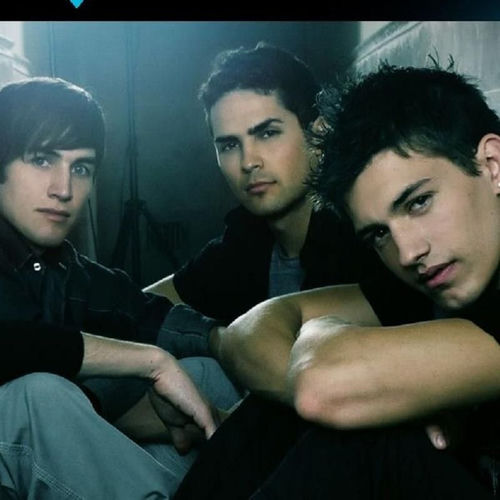

V Factory
V Factory was an American pop/R&B/urban boy band produced by former pop artist Tommy Page.
Complete Discography & Tracklists (11)
2008 These Are The Days 🎵 3 Tracks
2009 Love Struck [Remixes] (DMD Maxi) 🎵 4 Tracks
2009 Love Struck [Dave Aude Club] 🎵 0 Tracks
No tracks registered.
2009 Love Struck 🎵 0 Tracks
No tracks registered.